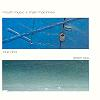

Celtic Lyrics Corner > Artists & Groups > Mouth Music > Blue Door Green Sea
|  |
Blue Door Green Sea
(1992) |
| Tracks : |
1.
S Muladach Mi (Sad Am I And Lonely)
2. The 45 Revolution/A Reel For Drambuie 3. Seinn O (Sing - Dance Mix) |